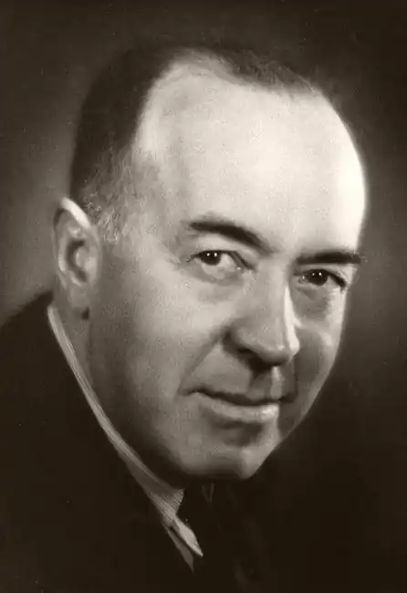
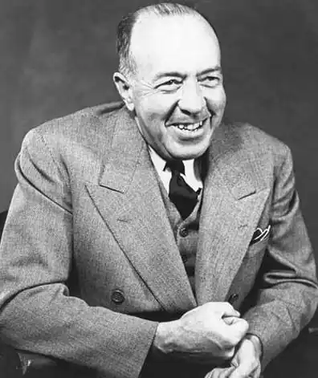
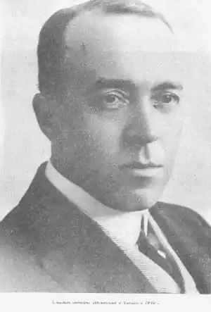

Його роман відкинули всі видавництва, але ситуація змінилася раз і назавжди після того, як "Тарзана" з номера в номер почала друкувати нью-йоркська газета "Evening World".
Щось містичне було в цій людині. Це був маг, який вічно потрапляв під владу власних чар: варто йому почати писати текст довший сторінки, як у нього виходив пригодницький роман.
Одного разу він вирішив написати автобіографію. Він сів до машинці, заправив у неї чистий аркуш і надрукував: "Едгар Райс Берроуз. Письменник Мене завжди засмучувало, що життя моя не блищала подіями, які могли б надати захопливість біографічного оповідання. На жаль — я з числа невдах, яким не щастить з пригодами, вони завжди прибувають на пожежу, коли вогонь вже загасили. Я народився в Пекіні, де мій батько був військовим радником при Імператриці Китаю; до десятирічного віку я жив разом з сім'єю в Забороненому Місті. Глибоке знання китайської мови, набуте мною за ці роки, не раз служила мені добру службу — особливо в дослідженнях, які я вів, а інтерес мій був звернений переважно до китайської філософії і китайському порцеляні…" Зачин був хороший, проблема полягала в іншому: Едгар Райс Берроуз народився не в Пекіні, а в Чикаго, і батько його був пивоваром, а не військовим. І зі знанням китайської мови у автора "Тарзана" було далеко не так благополучно, як про це написалося того… І ця приголомшлива здатність до творчості проявилася в нього тільки в 36 років. Едгар Райс Берроуз народився 1 вересня 1875 року в родині ветерана громадянської війни (офіцер армії Північного союзу), який після війни став процвітаючим бізнесменом. Едгар був четвертою дитиною в сім'ї. Два його старших брата закінчили Єльський університет, а сам він був відправлений до школи Браун. Коли ця школа закрилася на карантин під час епідемії дифтерії, його перевели в Маплхерстовскую школу для дівчаток (ось так-то), а потім — у Эндоверскую гарвардську школу, після закінчення якої Едгар вступив в Мічиганську військову академію. Пізніше Берроуз згадував, що у всіх школах його наполегливо вчили грецької мови та латини, але ні в однієї з них в програмі не було курсу англійської мови. Зате у військовій академії він навчився відмінно їздити верхи. Закінчивши академію в 1895 році, він заручився (з допомогою батька, звичайно) підтримкою конгресмена від Чикаго Едгара Вілсона і отримав рекомендацію у Вест-Пойнт, але переоцінив вагомість рекомендації і ганебно провалився на вступних іспитах. Тоді він кинувся в погоню за пригодами і в травні 1896 року визначився в кавалерію. Однак замість бурхливої похідного життя і сутичок з апачами він знайшов лише класичні принади військового животіння в глухій провінції — в форте Грант, штат Арізона, де розташовувався 7-й кавалерійський полк армії США. Тому від форми Едгар волів якомога швидше позбутися — вже через три місяці після початку служби він написав батькові листа, в якому просив переговорити зі знайомими з Вашингтона. Тато пішов у нього на поводу, але бюрократичні процедури тягнулися ще цілих сім місяців, так що з кавалерією Едгар розлучився лише в березні 1897 року. Після демобілізації Берроуз довго пас корів в Айдахо. У 1941 році він згадував: "Життя ковбоя припала мені до душі, хоча в ті часи в Айдахо не було ні однієї душової. Бувало, я за три тижні не знімав чоботи і "стетсон". У мене були мексиканські шпори, оздоблені сріблом, з величезними зірочками і призвоном. Коли я тупотів по вулиці, шпори голосно звякали, і мене було чутно за квартал. О, як я був гордий!" Потім він працював продавцем у Покателло, штат Айдахо, на золотих копальнях в Орегоні, поліцейським в Солт-Лейк-Сіті, клерком в чиказьких конторах, бухгалтером, комівояжером, безуспішно намагався виїхати в Китай інструктором з верхової їзди і думав навіть знову завербуватися в армію. Зберігся лист від полковника Теодора Рузвельта, у ті роки — командира Першого кавалерійського добровольчого батальйону, який Едгар намагався записатися. "Дорогий сер, — написав Берроузу майбутній президент США, — я був би радий прийняти вас на службу, однак небезпека перевищення чисельності особового складу батальйону не дає мені можливості відповідати згодою на пропозицію добровольця, який живе так далеко від місця моєї дислокації". Берроуз регулярно брався за створення власного підприємства, але всі його задуми швидко перемелювалися життям в прах. А адже він вже був одружений, потрібно було годувати двох дітей… І от уявіть собі картину. 1911 рік. Тридцятип'ятирічний бізнесмен, невдаха, який ніяк не може звести кінці з кінцями і тільки що назавжди розпрощався з черговим клієнтом, сидить ввечері в спорожнілому офісі і простим олівцем на звороті бухгалтерського бланка пише… фантастичний роман. Роман про людину, якого невідомо як закинуло на Марс, у світ нескінченних пригод, в світ, зовсім не схожий ні на "картопляний" Айдахо, ні на діловий Чикаго. У світ, схожий на чарівний сон. Два десятиліття боротьби за існування навчили Берроуза не нехтувати ніяким заробітком. Він, звичайно, не вірив, що його писанину хтось надрукує, але все-таки послав рукопис у редакцію журналу "All Story", підписавши роман промовистим псевдонімом Normal Bean — "нормальний хлопець". Він сподівався таким чином дати зрозуміти і редактора, і гіпотетичним читачам: автор, загалом, усвідомлює все божевілля свого вчинку, але, в сутності, цілком у своєму розумі. Берроуз багато і охоче читав, в коло його читання на верняка входили і популярні журнали, так що він цілком уявляв, твори якого рівня можуть бути прийняті до публікації. Як і більшість більш-менш освічених людей, він напевно частенько думав, закриваючи і забуваючи черговий "шедевр" журнальної прози: "Я б написав куди краще, ніж це, якби захотів". Тепер у нього з'явився шанс перевірити, наскільки його амбіції відповідають поглядам редакторів. За іншою версією, одним з його обов'язків на роботі був перегляд реклами в pulp-журналах, так що розповіді потрапили в поле його зору як би самі собою. Можливо, так воно і було, тим більше що рукопис він запропонував саме тому видання, якому її і слід було запропонувати в першу чергу — тобто Берроуз у загальних рисах представляв тодішній журнальний "табель про ранги". "All Story" вважався в ті часи одним з найпопулярніших щомісячних журналів, що належали видавничої імперії Френка Мансі і, крім усього іншого, платив авторам найвищі гонорари, так що пробитися на його сторінки вважалося великою удачею для будь-якого письменника. Логічно було почати саме з нього — будь-який товар слід спочатку запропонувати на найдорожчому ринку… Редактором самопливом в "All Story" Редактором самопливом в "All Story" в той час був Томас Ньюелл Меткаф, і саме йому належить честь відкриття світу імені чи не найпопулярнішого письменника XX століття. Він негайно прийняв рукопис, виписав на ім'я Берроуза чек на 400 доларів (фантастичні гроші за фантастичний твір!) і поставив роман, озаглавлений "Під місяцями Марса" ("Under the Moons of Mars"), в план. Роман публікувався в шести номерах — з лютневого і до липневого випуску 1912 року. Правда, задумана Берроузом гра з псевдонімом була, мабуть, занадто складна для журналу: чи то сам Меткаф, то хтось із коректорів виправив "Normal" на звичайне "Norman" і звів нанівець всю затію. Але запобігти тріумф така дрібниця не могла. З самого першого фрагмента читач був підкорений чином Джона Картера, і, хоча текст роману ніс всі ознаки літературного учнівства, було в цьому героєві і його пригоди щось заворожливе й нове. Насамперед, новим був сам герой — Джон Картер. Зовні звичайний чоловік, колишній кавалерійський офіцер армії Конфедерації, він як би побіжно згадує вже на початку своїх нотаток (роман побудований саме як його спогади) про деяких власних незвичайних якостях. Наприклад, він зовсім не пам'ятає своєї юності; він виглядає тридцятирічним, хоча точно знає, що прожив на світі набагато довше, він навіть згадує, що двічі помирав — і двічі повертався до життя. Записки свої він доручив опублікувати після своєї чергової смерті, причому заповів поховати себе у відкритій труні, в печері, двері в яку можна буде відкрити тільки зсередини… Таємниця життя і смерті Джона Картера так і залишається таємницею — Берроуз більш жодним натяком не дає читачеві ключ до розгадки. Точно так само не дається ніякого пояснення і тому, як Джон Картер опинився на іншій планеті: судячи з опису "перенесення" на Марс, Картер опинився там у вигляді астрального тіла після однієї з своїх смертей. Однак і це пояснення дуже добре: на Марсі герой діє як цілком тілесне істота. Швидше за все, Берроуз і не збирався давати жодних пояснень. Всі його винаходи підпорядковувалися лише однієї мети: він повинен був втягнути читача в гру на своїх умовах, читач повинен був цю гру прийняти, якими б неймовірними ці умови не були. І, треба сказати, Берроузу цей хід блискуче вдався. Коротка зав'язка, яка розгортається в знайомих читачам декораціях вестерну — прерія, золоті поклади, індіанці, — створює атмосферу достовірності та впізнаваності, а таємниця особистості Джона Картера надає цій атмосфері хвилюючу загадковість. Коли антураж Середнього Заходу раптово змінюється марсіанськими пустелями, а індіанці — зеленими багаторукого варварами, читач вже "схоплений", а фантастичний антураж Марса-Барсума досить швидко обростає безліччю деталей, щоб зійти за добре промальований фон пригодницького роману. Але в центрі уваги читача і автора, звичайно, залишається не Барсум, а сам Джон Картер. Оголений чоловік у незнайомому світі, людина, позбавлена звичного зброї і звичної захисту, людина, яка може розраховувати тільки на свої фізичні і моральні сили. Людина, яка долає всі труднощі, так як виявляється в змозі пристосуватися до чужого йому світу… Зверніть увагу, як чудово історія Джона Картера ілюструє ідею пристосовності. Романи Берроуза гранично материалистичны — він і насправді був послідовним матеріалістом, а з купленої в 1890-х роках книгою Дарвіна "Походження видів" не розлучався, кажуть, до самої смерті. Фріц Лейбер спробував в ранній статті "Джон Картер: меч теософії" пов'язати творчість Берроуза з теорією Олени Блаватської, але сам Берроуз так часто демонстрував у своїх книгах нехтування всякими умоглядними теоріями, що побудови Лейбера ніхто не вважав за потрібне спростовувати — вони просто не отримали ніякого продовження. Зате думка про нескінченної пристосовності людини отримала розвиток і певну закінченість у другому романі Берроуза.